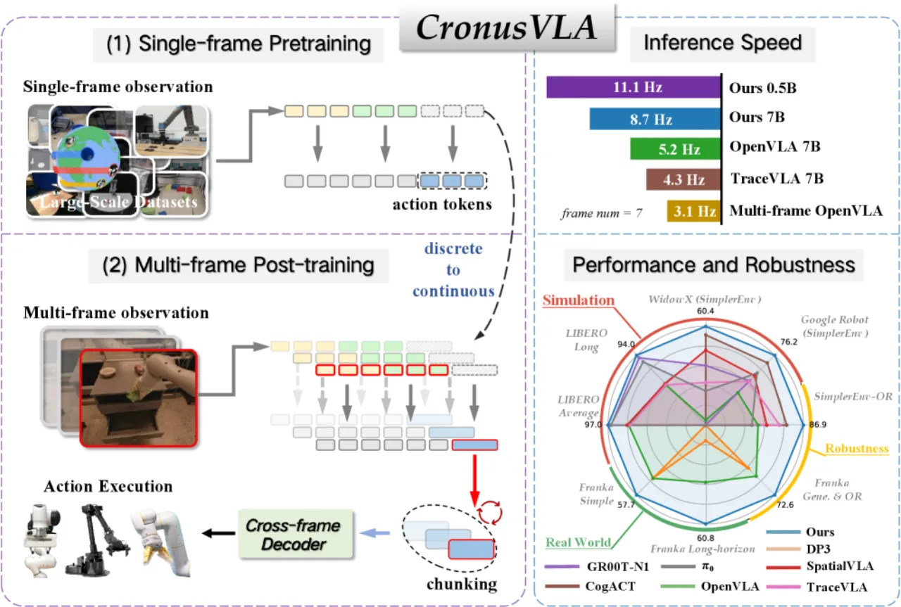
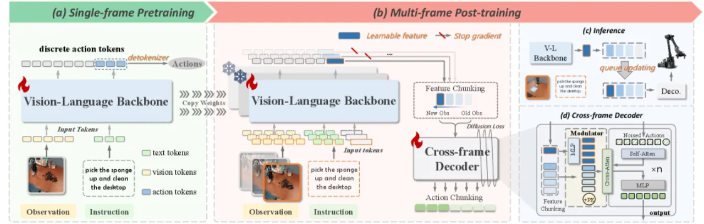
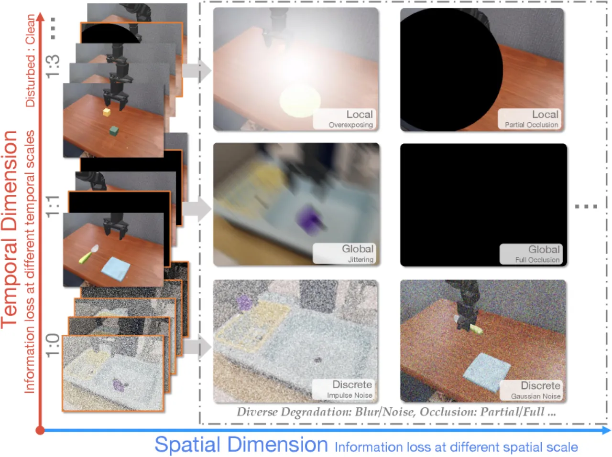
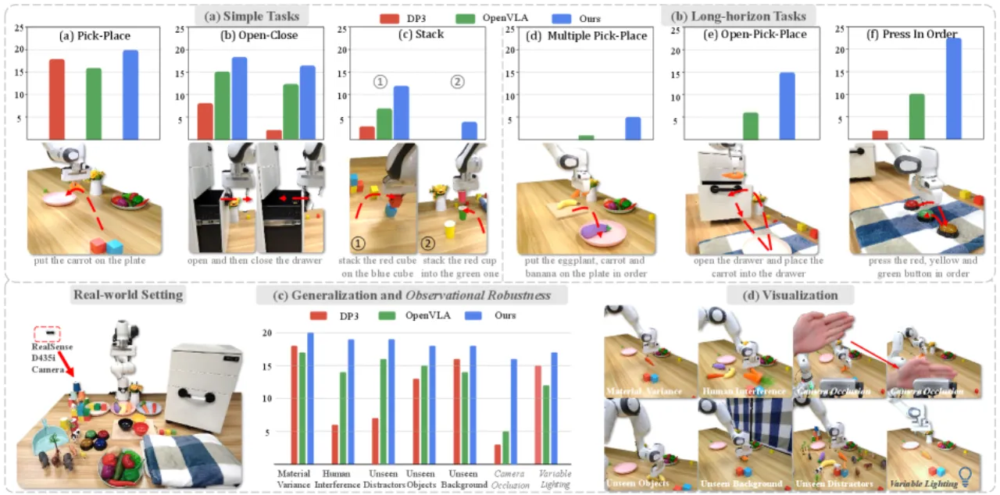
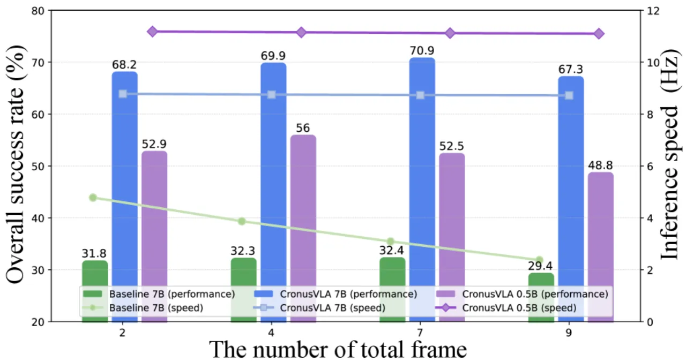

CronusVLA 将单帧 VLA 模型扩展至多帧范式：先在大规模具身数据集上进行单帧预训练，再通过 feature chunking 与跨帧解码器（cross-frame decoder）汇聚历史帧信息进行后训练，同时大幅提升推理速度与观测鲁棒性。
现有基于预训练视觉-语言模型（VLM）的 VLA 模型仍受限于单帧图像范式，无法充分利用多帧历史提供的时序信息。 直接将多帧图像输入 VLM backbone 会因 self-attention 的二次方计算复杂度带来巨大的计算开销和推理延迟。 低级策略（low-level policies）的研究已表明多帧历史观测可提升性能与鲁棒性，但如何将其高效地引入大型 VLA 模型仍是未解难题。
"these models remain constrained by the single-frame image paradigm and fail to fully leverage the temporal information offered by multi-frame histories, as directly feeding multiple frames into VLM backbones incurs substantial computational overhead and inference latency."

CronusVLA 采用两阶段训练策略：第一阶段在大规模具身数据集上进行单帧 VLA 预训练，建立有效的具身视觉-语言基础； 第二阶段通过 feature chunking 将 VLM backbone 的输出从离散 token 替换为可学习特征（learnable features）， 并经由跨帧解码器（cross-frame decoder）汇聚历史多帧信息，同时利用队列机制（queue mechanism）实现快速推理。

第一阶段在大规模异构具身数据集上训练基础单帧 VLA 模型，采用自回归方式预测离散动作 token（量化为 256 bins）。 该阶段保留了 VLM backbone 的视觉感知能力，为后续多帧扩展奠定强基础。 模型配置包括：CronusVLA-7B（Llama 2 7B backbone，DINOv2 + SigLIP 视觉编码器） 与 CronusVLA-0.5B（Qwen2.5 0.5B backbone）。
后训练阶段将 VLM backbone 的预测目标从离散 token 切换为连续的可学习特征，并通过 feature chunking 将 M 步历史帧的特征组织为结构化序列送入跨帧解码器。 跨帧解码器基于 DiT（Diffusion Transformer）设计，包含：
历史帧特征采用 stop-gradient 操作，防止梯度更新 VLM backbone，从而在保留单帧感知能力的同时实现解码器层面的时序建模（multi-frame regularization）。 推理时利用 feature 缓存（feature caching）消除重复的视觉-语言计算，实现 8.73 Hz 的高速推理（基线仅 3.09 Hz，提升 184%）。 后训练数据集为 Bridge-v2 + Fractal（148k 轨迹，5M 多帧片段）。
为评估时序与空间干扰下的鲁棒性，论文提出 SimplerEnv-OR benchmark，包含 24 种观测干扰类型（模糊、抖动、丢帧、遮挡、噪声等）与 120+ 严重程度等级，覆盖 Global、Local、Discrete 三大类别，支持空间维度与时序维度的独立评估。

实验在三种具身平台（Google Robot VM/VA、WidowX、Franka）上进行，涵盖 SimplerEnv 仿真 benchmark、LIBERO benchmark、SimplerEnv-OR 鲁棒性评测及真实世界 Franka 机器人实验。 基线包括 OpenVLA、TraceVLA、RoboVLMs、SpatialVLA、DP3 等。
| 方法 | Google VM | Google VA | WidowX | 平均 |
|---|---|---|---|---|
| OpenVLA | 17.9% | 26.0% | 30.1% | 24.7% |
| TraceVLA | 45.8% | 49.8% | — | — |
| SpatialVLA-7B | — | — | — | — |
| CronusVLA-7B | 78.6% | 73.8% | 60.4% | 70.9% |
相较 TraceVLA，CronusVLA-7B 在 Google VM 上取得 +71.6% 的相对提升，Google VA 上提升 +48.2%。
| 方法 | LIBERO-Spatial | LIBERO-Object | LIBERO-Goal | LIBERO-Long | 平均 |
|---|---|---|---|---|---|
| OpenVLA | 84.7% | 88.4% | 79.2% | 53.7% | 76.5% |
| CronusVLA-7B | 99.0% | 99.3% | 95.8% | 94.0% | 97.0% |
长时序任务（LIBERO-Long）成功率从 OpenVLA 的 53.7% 提升至 94.0%（+40.3%）；整体平均成功率较 OpenVLA 提升 +26.8%（论文摘要原文数据）。
| 方法 | 时序鲁棒性（Sparse） | 空间鲁棒性（平均） |
|---|---|---|
| RoboVLMs | — | 78.7% |
| SpatialVLA | — | 63.1% |
| CronusVLA-7B | 96.2% R-Score | 86.9% R-Score |


消融实验关键结论：
SimplerEnv-OR 当前涵盖 24 种干扰类型，尚不包含针对关键帧（keyframe）的定向扰动，无法全面模拟真实部署场景中的所有干扰形式，需进一步扩充。
现有评估使用固定频率的干扰模式（Constant / Cyclic / Sparse），可能无法覆盖最恶劣的连续干扰场景（worst-case scenarios）。
论文指出未来工作需扩展基线方法的对比范围，并增加对更多仿真环境的支持，以更全面地评估方法的泛化能力。